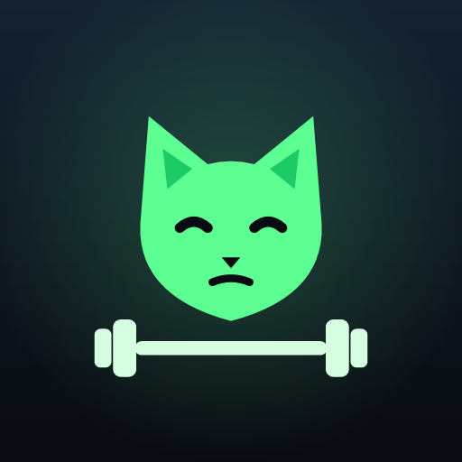

Persönliche Trainingspläne für Gym und Zuhause, Übungen mit Fotos und Technikhinweisen, ein Avatar, der mit deinem Training wächst, und dein Fortschritt auf einen Blick.
Fragen, Fehler oder Wünsche? Schreib an nicowarscher@gmx.at – wir antworten so schnell wie möglich.
Brauche ich ein Konto?
Nein. Muskelkater funktioniert ohne Anmeldung; alle Daten bleiben auf deinem Gerät.
Wie lösche ich meine Daten?
Deinstalliere die App oder lösche die App-Daten in den Einstellungen deines Geräts. Damit ist alles entfernt.
Wofür braucht die App die Kamera?
Nur für die freiwillige Rettungsquest: Die Bewegung wird direkt auf dem Gerät geprüft, Bilder werden nicht übertragen.
Muskelkater ersetzt keine ärztliche oder therapeutische Beratung. Die App richtet sich an gesunde Erwachsene. Bei Schmerzen oder Beschwerden das Training abbrechen und fachlich abklären lassen.
Datenschutzerklärung · Impressum
© 2026 Nico Warscher